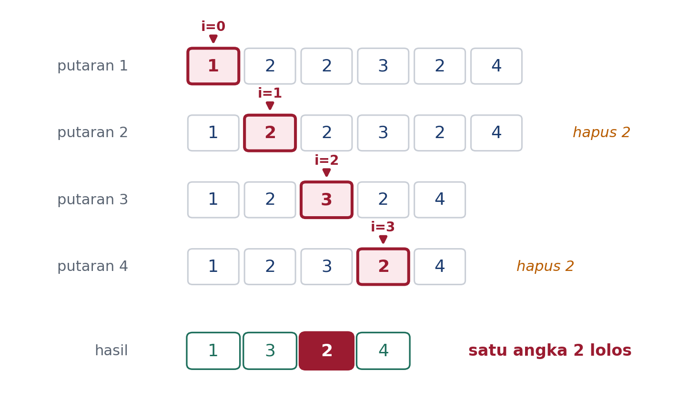
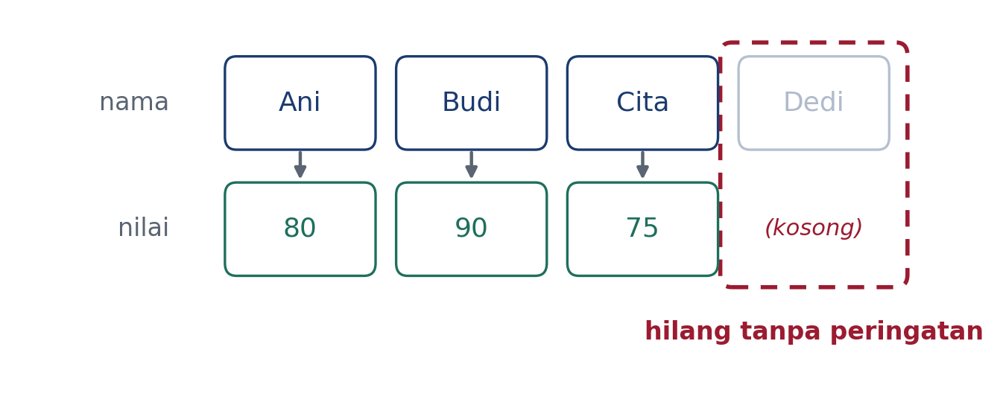
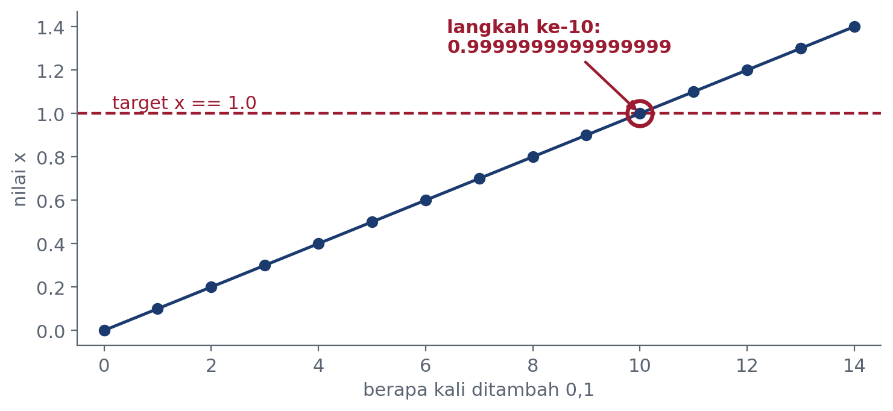

Pemrograman Komputer · Kelas B
Dr. Mohammad Jamhuri
Program Studi Matematika · Fakultas Sains dan Teknologi
UIN Maulana Malik Ibrahim Malang
Pertemuan 2 · Buku Bab 3 · 120 menit
Saya akan sering berhenti bicara
Dugaan salah tidak memalukan.
Yang memalukan justru diam saja. Kelas yang seluruh dugaannya benar berarti materinya terlalu mudah, dan waktu kita terbuang.
Tutup laptop dulu. Jangan dijalankan sebelum diminta.
A data = [1, 2, 2, 3] for v in data: if v == 2: data.remove(v)
B nama = ["Ani", "Budi", "Cita"] nilai = [80, 90] for n, x in zip(nama, nilai): print(n, x)
C x = 0.0 while x != 1.0: x += 0.1
D for i in range(3): for j in range(3): if i * j > 2: break
Jawabannya: tidak satu pun.
Tiga di antaranya salah. Yang satu menggantung selamanya.
Inilah tema hari ini
Empat jebakan berikut semuanya diam
Jebakan pertama
Wadahnya berubah di bawah kaki sendiri
data = [1, 2, 2, 3, 2, 4] for v in data: if v == 2: data.remove(v) print(data)
Maksudnya jelas: buang semua angka 2.
Angkat tangan
[1, 3, 4][1, 3, 2, 4][1, 2, 3, 4]Sekarang 60 detik: yakinkan teman sebelah yang jawabannya berbeda.
data = [1, 2, 2, 3, 2, 4] for v in data: if v == 2: data.remove(v) print(data)
[1, 3, 2, 4]
Satu angka 2 selamat
Tidak ada pesan galat. Tidak ada peringatan. Programnya selesai dengan tenang, dan hasilnya salah.
Kenapa justru yang di tengah?

Indeks maju ke kanan, wadahnya menyusut ke kiri.
Setiap penghapusan menggeser sisanya satu langkah, dan satu unsur melompati penunjuk.
Susur salinannya
for v in data[:]: if v == 2: data.remove(v)
Jalan, tetapi menyalin seluruh wadah hanya untuk itu.
Bangun wadah baru
data = [v for v in data if v != 2]
Satu baris, terbaca, dan tidak pernah mengubah yang sedang disusur.
Saring dengan syarat
data = list(filter( lambda v: v != 2, data))
Setara, tetapi lebih panjang dan jarang dipakai.
Jangan mengubah wadah yang sedang Anda susur. Kalau perlu berubah, bangun wadah barunya.
Jebakan kedua
zip memotong diam-diamData hilang, dan tidak ada yang memberi tahu
nama = ["Ani", "Budi", "Cita", "Dedi"] nilai = [80, 90, 75] for n, x in zip(nama, nilai): print(n, x)
Empat nama, tiga nilai.
Angkat tangan
NoneAni 80 Budi 90 Cita 75

Kenapa ini berbahaya di dunia nyata
Bayangkan 10.000 baris data penjualan dan 9.998 baris tanggal. Laporannya tetap jadi, angkanya tetap masuk akal, dan dua transaksi lenyap tanpa bekas.
for n, x in zip(nama, nilai, strict=True): print(n, x)
Ani 80 Budi 90 Cita 75 ValueError: zip() argument 2 is shorter than argument 1
Sejak Python 3.10. Sekarang programnya berhenti dan berteriak. Itu jauh lebih murah daripada laporan yang salah dan baru ketahuan sebulan kemudian.
Biasakan menulis strict=True
kecuali memang sengaja ingin dipotong.
Jebakan ketiga
Dan ini bukan salah Python
x = 0.0 langkah = 0 while x != 1.0: x += 0.1 langkah += 1 print(langkah)
Angkat tangan
1011Yang menjawab A, coba jelaskan ke sebelah kenapa Anda seyakin itu.

Setelah sepuluh langkah, x bernilai 0.9999999999999999
Syarat x != 1.0 tetap benar, jadi perulangannya jalan terus.
Cacah dengan bilangan bulat
for i in range(10): x = i * 0.1
Pencacahnya bulat, jadi jumlah putarannya pasti. Nilai x dihitung, bukan ditumpuk.
Bandingkan dengan toleransi
import math while not math.isclose(x, 1.0): x += 0.1
Dipakai kalau nilainya memang harus ditumpuk dan tidak bisa dihitung langsung.
Jangan pernah memakai == atau
!= pada bilangan riil. Perulangan yang dikendalikan
bilangan riil adalah perulangan yang menunggu waktu untuk gagal.
Ini meledak
n = 0 if 10 / n > 1 and n != 0: print("aman")
ZeroDivisionError
Ini tidak
n = 0 if n != 0 and 10 / n > 1: print("aman")
Urutannya menentukan. Python berhenti
menilai begitu jawabannya sudah pasti. Pada and, ruas
kiri yang salah membuat ruas kanan tidak pernah dijalankan.
Taruh penjaganya di kiri.
Periksa dulu apakah boleh, baru periksa nilainya.
for-elseCara biasa, dengan penanda
ketemu = False for v in data: if v == target: ketemu = True break if not ketemu: print("tidak ada")
Dengan else
for v in data: if v == target: break else: print("tidak ada")
else pada perulangan berarti
“kalau selesai tanpa break”,
bukan “kalau syaratnya salah”.
Kenapa namanya membingungkan
Banyak yang mengusulkan namanya nobreak.
Guido van Rossum sendiri mengakui pemilihan kata ini keliru. Tetapi
kodenya sudah telanjur tersebar, jadi namanya tetap.
Dengan penanda
ketemu = False for i in range(n): for j in range(m): if a[i][j] == t: ketemu = True break if ketemu: break
Dengan fungsi
def cari(a, t): for i in range(n): for j in range(m): if a[i][j] == t: return i, j return None
return keluar dari
semua lapis sekaligus.
Begitu Anda menulis peubah penanda seperti ketemu,
hampir selalu itu tanda bahwa bagian ini pantas jadi fungsi tersendiri.
match-case: mencocokkan bentuk, bukan cuma nilaititik = (0, 5) match titik: case (0, 0): print("titik asal") case (0, y): print(f"di sumbu y, y={y}") case (x, 0): print(f"di sumbu x, x={x}") case (x, y): print(f"di ({x}, {y})")
di sumbu y, y=5
Polanya sekaligus membongkar
nilainya. Peubah y langsung terisi 5 tanpa perlu
titik[1].
Urutannya penting. Pola yang lebih khusus harus ditulis lebih dulu.
| Jebakan | Kenapa berbahaya |
|---|---|
| Menghapus sambil menyusur | Indeks bergeser, satu elemen terlewat |
zip panjang beda | Data terpotong diam-diam, tanpa galat |
Perulangan float | Syarat berhenti tidak pernah terpenuhi |
and/or hubung-singkat | Sisi kanan tidak pernah dievaluasi |
Python tidak berbohong. Python hanya diam ketika kita tidak bertanya. Aturan mainnya sudah benar, hanya pertanyaan kita yang harus lebih tajam: elemen mana yang sebenarnya diproses?
Kode berikut lolos tanpa galat. Apa keluarannya, dan kenapa?
saldo = [100, -50, 200, -30, 80] i = 0 while i < len(saldo): if saldo[i] < 0: saldo.remove(saldo[i]) i += 1 print(saldo)
Cara mengumpulkan jawaban. Tulis dugaan Anda di kertas kecil sebelum pertemuan berikutnya dimulai. Kita bandingkan dulu, baru kita jalankan bersama.
Petunjuk: pola jebakannya sudah Anda lihat hari ini, hanya beda wajah.
Pertemuan 2 selesai
Ajukan dugaan Anda, salah pun boleh.
Buku: Python untuk Machine Learning dan Data Science, Bab 3
Kode: github.com/jamhuri-tech/buku-python-ml-kode
Dr. Mohammad Jamhuri — UIN Maulana Malik Ibrahim · m.jamhuri@mat.uin-malang.ac.id